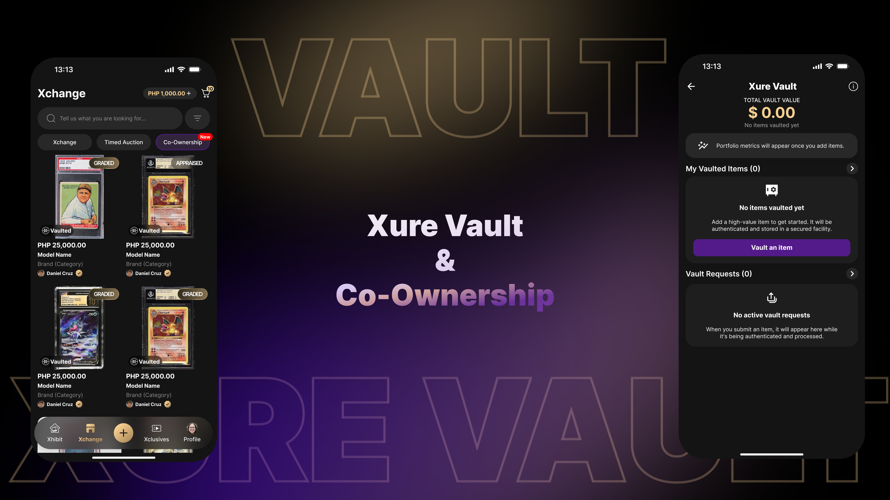

Vault Dashboard

A central dashboard for tracking vaulted items and ownership activity.
Xure Vault & Co-Ownership · Concept, not launched
Vault explored how a physical collectible could become a vaulted, trackable, and potentially shareable digital asset — and how buying a fraction of something could be made to feel as clear as buying all of it. Unlike Xtore and Xchange, there was no existing process to redesign; the process had to be invented.

Overview
Vault imagined a new kind of ownership inside Xure: a physical collectible could be vaulted — verified, stored, and tracked — then optionally listed for co-ownership, where more than one person could hold a share of the same item. There was no prior version of this experience to iterate on; the process, the vocabulary, and the flows all had to be defined from scratch.
This is the most conceptual case study in the portfolio, and the most structural: the interesting problems were less about individual screens and more about how the pieces of an entirely new system fit together.
Context
Xure already had a marketplace (Xchange) and a merchant tool (Xtore). Vault introduced a third kind of relationship to an item: not just listing it for sale or buying it outright, but storing it, verifying it, and — if the owner chose — sharing ownership of it with others. The experience needed to connect back into Xchange for listing and browsing co-ownership shares, without feeling like a bolted-on separate app.
My Role
I began with competitor research and open FigJam brainstorming before moving into Figma — mapping the shape of the system before designing any individual screen. Areas I worked through included Vault Access, the Vault Dashboard, Vaulted Items, Vault Requests, the Marketplace connection, Add Item flows, Vault Submission, Shipping/Vaulting, Certificate Status, Vault Payment, Xpert Appraisal Requests, Fractional Ownership, Co-Ownership Listings, Vault History, and both the Seller and Buyer points of view.
Challenge
Building a product system where an established process did not already exist.
Introducing a large new feature into Xure without making the app feel drastically different.
Presenting complex ownership information clearly, without overwhelming the user.
Research

Since Vault had no internal precedent, I looked outward first. I used Fanatics Collect as a competitive reference point for how a vaulted-collectibles experience could be structured, then ran open brainstorming in FigJam to adapt those ideas to Xure's context before any UI work began.

Process
The overall experience was structured around three connected stages, each with its own flows, states, and decisions:
An owner submits an item — manually or from existing inventory — has it shipped and verified, and receives a certificate reflecting its status in the vault.
A vaulted item's owner can list it for fractional ownership, defining how the item is shared and surfacing that listing through Xchange.
Buyers acquire a share of the item and manage their stake alongside other co-owners, with ownership history tracked over time.
Vaulting
The submission flow needed clear progress indicators, since vaulting an item involves several real-world steps — shipping, appraisal, and certification — that happen outside the app and take time.

Allows owners to submit items that are not already listed in Xure by entering the item details directly.

Lets owners select items already tracked in Xure, reducing the need to enter the same information again.

Introduces the vaulting feature, explains its purpose, and provides a clear starting point for adding an item instead of leaving users at an empty screen.
Co-Ownership
Because the same item could be viewed by the person who listed it and the people who bought a share of it, the seller and buyer perspectives needed distinct views built on a shared ownership model.
The owner lists a vaulted item for fractional ownership, sets how it's shared, and tracks incoming requests and current co-owners.

The buyer browses co-ownership listings through Xchange, buys a share, and manages that stake alongside the item's other owners.

Key Design Decisions
The hardest part of Vault wasn't any single screen — it was deciding how much ownership information a person needed to see at once, and when.
| Decision | Why |
|---|---|
| Step indicators throughout submission | Vaulting spans real-world time; users need to know where they are in a process that doesn't finish instantly. |
| Separate Seller / Buyer POV | The same item means something different depending on whether you listed it or bought into it. |
| Vault connects to Xchange rather than duplicating it | Keeps one marketplace surface instead of introducing a second, competing one. |
| Certificate status shown before ownership detail | Trust in the item's verification needed to be established before asking users to reason about shares. |
Final Concept
A central dashboard for tracking vaulted items and ownership activity.

Lets owners list their items and define available ownership shares.

Guides buyers through reviewing and purchasing fractional ownership.

Shows how owners can request the return of their vaulted items.

Organizes past sales, transfers, and co-ownership activity.
Reflection
Structure the system before you design any individual screen.
A new feature should feel native to the product it's joining, not bolted on.
Progress and status matter most when a process spans real-world time.
The same object can need two different interfaces depending on who's looking at it.
Competitive research is a starting point, not a template to copy.
Conceptual work still needs to resolve down to real, specific screens.